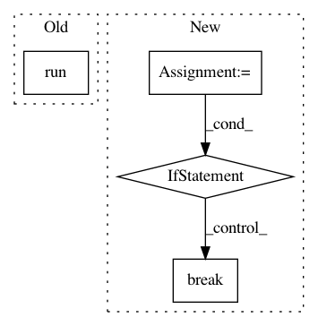

57544b1ff9f97d4da9f64d25c8ea5a3d8d247ffc,rllib/examples/rock_paper_scissors_multiagent.py,,run_heuristic_vs_learned,#Any#Any#Any#,106
Before Change
"policy_mapping_fn": select_policy,
},
}
tune.run(trainer, stop={"timesteps_total": args.stop}, config=config)
def run_with_custom_entropy_loss(args):
Example of customizing the loss function of an existing policy.
After Change
trainer_obj = cls(config=config)
env = trainer_obj.workers.local_worker().env
for _ in range(args.stop_iters):
results = trainer_obj.train()
print(results)
// Timesteps reached.
if results["timesteps_total"] > args.stop_timesteps:
break
// Reward (difference) reached -> all good, return.
elif env.player1_score - env.player2_score > args.stop_reward:
return
// Reward (difference) not reached: Error if `as_test`.
if args.as_test:
raise ValueError(
"Desired reward difference ({}) not reached! Only got to {}.".
format(args.stop_reward, env.player1_score - env.player2_score))
In pattern: SUPERPATTERN
Frequency: 3
Non-data size: 4
Instances
Project Name: ray-project/ray
Commit Name: 57544b1ff9f97d4da9f64d25c8ea5a3d8d247ffc
Time: 2020-05-11
Author: sven@anyscale.io
File Name: rllib/examples/rock_paper_scissors_multiagent.py
Class Name:
Method Name: run_heuristic_vs_learned
Project Name: NifTK/NiftyNet
Commit Name: cd90b064de4b8d24e9419b3458c83626db356be7
Time: 2017-11-14
Author: wenqi.li@ucl.ac.uk
File Name: niftynet/engine/application_driver.py
Class Name: ApplicationDriver
Method Name: _inference_loop
Project Name: tensorlayer/tensorlayer
Commit Name: f2073333b710a340403843763ba60eb1e6699916
Time: 2019-04-11
Author: rundi_wu@pku.edu.cn
File Name: examples/data_process/tutorial_tfrecord2.py
Class Name:
Method Name: